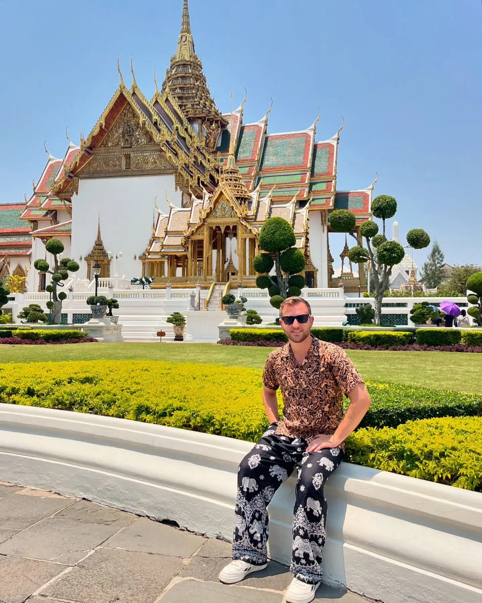
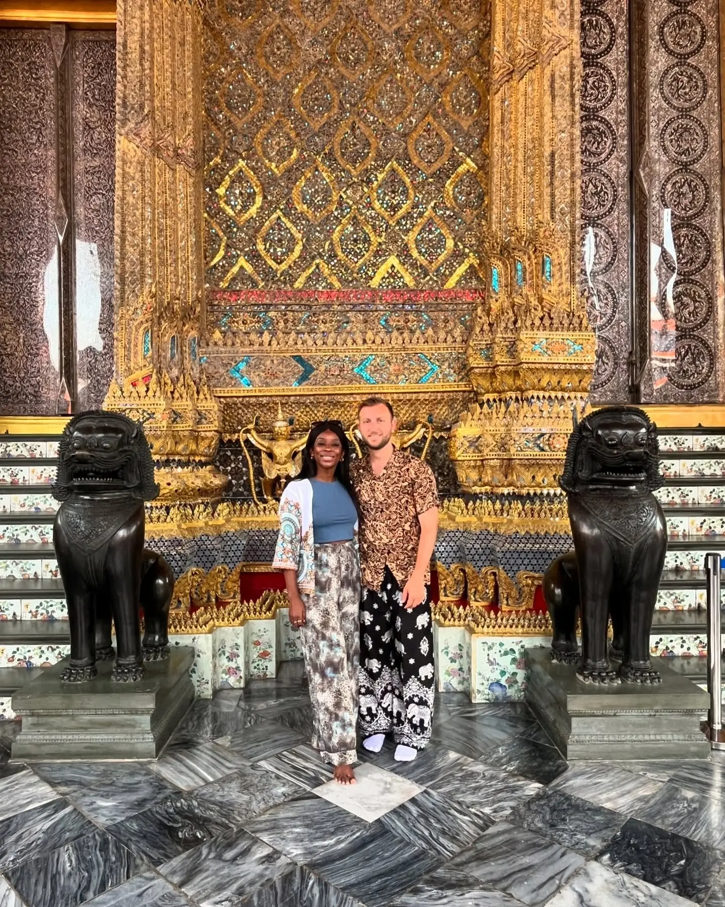

Bangkok · Most iconic01
The Grand Palace & Wat Phra Kaew
📍 Grand Palace · Old City (Rattanakosin)
An overwhelming, glittering complex of gold spires and mirrored temples, home to the Emerald Buddha. It's Bangkok's must-see — we'd just say get there early before the heat and the crowds peak. One thing to know: the dress code is strict (shoulders and knees covered for everyone); we brought layers, and you can rent a cover-up at the gate if needed.
Cover shoulders & kneesGo early